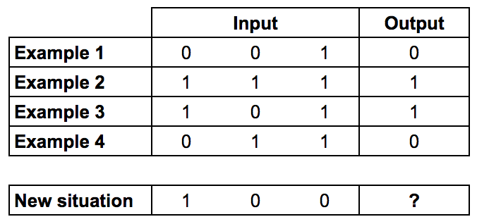
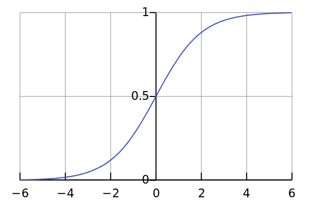

Construir una red neuronal en pocos minutos
Posted on dom 11 febrero 2018 in Tutorial de Python • 4 min read
En el artículo anterior se mostró una red neuronal que clasificaba unos datos(Introducción al perceptron).
Como lo dice el vídeo de como construir una red neuronal en 4 minutos, los pasos para trabajar con Machine Learning son:
- Construir
- Entrenar
- Probar
El vídeo a continuación de la explicación de la red neuronal:
Este artículo como el del vídeo se basa en un artículo publicado en medium que se llama How to build a simple neural network in 9 lines of Python code y en el artículo A Neural Network in 11 lines of Python (Part 1).
La idea es que se tiene una entrada de datos de 1 y 0 y se tiene una salida el cual es un 1 o un 0, esta muestra de datos se usarán para entrenar a la red neuronal, luego al terminar el aprendizaje y se ajusten los pesos de la red neuronal, se le pasará un nuevo escenario de datos de entrada y la red calculará el valor de salida.
A continuación una imagen de las muestras de datos de entrada, la salida que se genera y el nuevo escenario de datos que se recibirá.

La ecuación para calcular la salida de una neurona es:

Como función de activación de la red neuronal se usará un sigmoide:
Su ecuación es:

Y la gráfica:

Al sustituir la ecuación de la sumatoria con la función de la sigmoide se tiene la salida de una neurona:
A continuación el código de la construcción de la red neuronal, del entrenamiento y de la prueba:
In [1]:
# Datos de entrada y de salida
Entradas Salida
001 0
111 1
101 1
011 0
100 ?
In [2]:
#Se importan:
# exp: valor e
# array: manejo de arreglos
#random: números aleatorios
#dot: multiplicación de matrices.
from numpy import exp, array, random, dot
In [3]:
class RedNeuronal(object):
def __init__(self,seed=1):
# Seed el generador de números aleatorios, generará los mismos números
#cada vez que el programa corra.
random.seed(seed)
# se modelará una simple neurona con 3 entradas y una salida.
# se asignan pesos aleatorios a una matrix 3x1 con valores en el rango de -1 a 1
# y media de cero
self.pesos_sinaptico = 2 * random.random((3, 1)) - 1
# La función sigmoid, describe una curva S.
#Se pasa la suma de los pesos de las entradas a esta función
# se normaliza entre 0 y 1.
def __sigmoide(self, x):
return 1 / (1 + exp(-x))
# La derivada de la función sigmoid es el gradiente de la curva sigmoide
def __derivada_sigmoide(self, x):
return x * (1 - x)
# Se entrena la red neuronal desde un proceso de ensayo y error
# ajustando los pesos de las sinapcis cada vez
def entrenar(self, datos_entrenamiento_entrada, datos_entrenamiento_salida, numero_iteraciones):
for iteracion in range(numero_iteraciones):
# Se para los datos de entrenamiento a la red neuronal (una neurona)
salida = self.pensar(datos_entrenamiento_entrada)
# calculo del error (la diferencia entre la salida deseada y la que se predice
error = datos_entrenamiento_salida - salida
# multiplicar el error por la entrada y de nuevo por el gradiente de la curva sigmoide
# Esto significa menos presos cercanos son ajustados más
# esto significa las entradas las cuales son ceros, no causan
# cambios a los pesos.
ajuste = dot(datos_entrenamiento_entrada.T, error * self.__derivada_sigmoide(salida))
# se ajustan los pesos
self.pesos_sinaptico += ajuste
# la neurona piensa.se le pasa las entradas.
def pensar(self, entradas):
# pasas las entradas a la red neuronal, se devuelve la función de activación(sigmoide)
#se hace el producto punto de las entradas junto con los pesos.
return self.__sigmoide(dot(entradas, self.pesos_sinaptico))
In [4]:
#Se inicializa una neurona de la red neuronal.
red_neuronal = RedNeuronal()
print ("Pesos iniciales de la sinaptic:\n {}".format(red_neuronal.pesos_sinaptico))
# Conjunto de datos de entradas y salidas para el entrenamiento de la neurona.
#se tienen 4 muestras, cada consiste de 3 valores de entrada y 1 no de salida
datos_entrada = array([[0, 0, 1], [1, 1, 1], [1, 0, 1], [0, 1, 1]])
datos_salida = array([[0, 1, 1, 0]]).T
# Se entrena a la red neuronal con el conjunto de datos
#Se entrena unas 10 mil veces y se hace un pequeño ajuste cada vez
red_neuronal.entrenar(datos_entrada, datos_salida, 100000)
print ("Nuevos pesos sinapticos luego del entrenamiento:\n{}".format(red_neuronal.pesos_sinaptico))
# Se prueba la red neuronal con un nuevo escenario de datos
print ("Considere la nueva situación [1, 0, 0] -> ?: {}".format(red_neuronal.pensar(array([1, 0, 0]))))
Pesos iniciales de la sinaptic:
[[-0.16595599]
[ 0.44064899]
[-0.99977125]]
Nuevos pesos sinapticos luego del entrenamiento:
[[12.00870061]
[-0.2044116 ]
[-5.8002822 ]]
Considere la nueva situación [1, 0, 0] -> ?: [0.99999391]
El resultado para el caso de [1,0,0] es 1.
¡Haz tu donativo! Si te gustó el artículo puedes realizar un donativo con Bitcoin (BTC) usando la billetera digital de tu preferencia a la siguiente dirección: 17MtNybhdkA9GV3UNS6BTwPcuhjXoPrSzV
O Escaneando el código QR desde la billetera: